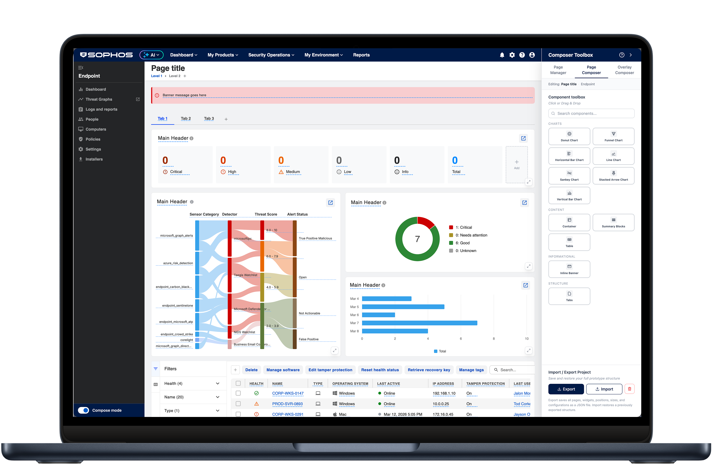

A composable UI builder for Sophos Central that lets designers, PMs, and engineers prototype pages without starting from scratch.

Page Composer is an internal tool I built in Cursor that redefines how product teams at Sophos design and prototype UI. Rather than opening a blank frame and building screens from scratch, teams start with the real structure of a Sophos Central page and assemble it from pre-designed, system-compliant components.
The tool is designed for designers, PMs, and engineers equally. A PM can mock up a feature idea in an afternoon without touching Figma or consuming AI tokens. An engineer can validate a layout against real components before a single line of code is written. A designer can assemble a full user journey in the time it would previously have taken to build a single screen.
The tool covers the full range of UI production: composing pages from layout blocks and widgets, building drawer and modal interactions, and linking screens into end-to-end mockable journeys. Everything it produces is aligned to the design system by default.
Page Composer shifts the act of design from creation to composition. It removes the friction that was slowing down teams and eating up UX capacity on work that did not require invention.
Sophos Central is a mature, complex platform. The design system is well established and the component library covers most of what any given feature needs. Yet teams were still spending most of their design time starting from a blank canvas.
Designers repeatedly rebuilt familiar layouts from scratch: list pages, dashboards, and detail drawers, wasting time on structure that had already been solved elsewhere in the product.
Without a guided starting point, components were applied inconsistently. Different teams interpreted the design system differently, and drift compounded over time.
XDR investigation workflows, security dashboards, and multi-step configurations required prototypes that were expensive to produce. High fidelity took too long; low fidelity failed to communicate intent.
Any UI work, regardless of complexity, had to flow through the UX team. PMs who needed a quick layout to communicate an idea had no way to produce one themselves without creating work for a designer.
The more I looked at how design time was being spent, the clearer it became: most of the effort was going into assembly work, not design thinking. The components existed. The patterns existed. The layouts existed. What was missing was a way to combine them quickly.
In a platform as mature as Sophos Central, the design problem is rarely “what should this look like?” It is almost always “which existing patterns apply here, and how do they fit together?” That is a composition problem, not an invention problem.
Teams did not need more components. They needed a structured, guided way to use the ones they already had: a layer between intent and implementation that removed the blank-canvas penalty.
Page Composer was designed to be that layer.
Page Composer presents a canvas that mirrors the actual structure of a Sophos Central page: chrome, navigation, content area, and header already in place. You are not designing a product page; you are working within one from the first moment.
Pre-built, system-compliant components are the building blocks. Designers and PMs can drag them into the canvas without worrying about whether they are using the right version, the right spacing, or the right token. The system handles that by default.
Page Composer is not a wireframing tool. Teams can add drawers, flyouts, and modals to any component on the canvas, creating interactions that reflect real product behaviour rather than static representations of it. A table row can open a detail drawer. A button can trigger a confirmation modal. The prototype behaves like the product.
Individual pages can be connected into full user flows. This means a PM or designer can mock a complete investigation journey in XDR, or a full onboarding sequence, without switching tools or rebuilding context. The output is a walkable, shareable prototype, not a deck of screenshots.
Page Composer is positioned as a bridge between design intent and product reality. It does not replace UX thinking; it removes the production overhead that was preventing that thinking from happening quickly enough.
Page Composer in action
Build full pages using real Sophos Central layout structures, starting from a live product frame rather than a blank canvas.
Extend standard layouts with configurable widgets while staying within design system rules. Flexibility without drift.
Add real interactions to any element on the canvas. Drawers, flyouts, and modals behave as they would in the live product.
Link pages and interactions into end-to-end flows, so teams can walk through realistic journeys rather than scroll through static screens.
Every output is anchored to the design system. Correct components, correct tokens, correct spacing, without requiring designers to police it manually.
Common page templates accelerate recurring work. Designers and PMs start from an established baseline, not a blank frame.
The most important measure of Page Composer is not what it does; it is what changes when teams use it. The shift in how UI work gets done is significant.
Every piece of work began from nothing. Layout, chrome, spacing, and structure all had to be built manually before any meaningful design decision could be made.
List pages, data tables, and detail panels were rebuilt from scratch by each designer, with each iteration introducing small variations that accumulated into inconsistency.
Every UI artefact, regardless of complexity, had to be produced by a designer. PMs had no way to contribute directly, and the bottleneck was structural.
Prototypes were collections of screens. Stakeholders and researchers had to imagine the connective tissue between them, which made feedback less specific and testing less realistic.
Work begins in the correct context immediately. Layout, navigation, and chrome are already in place. Teams move straight to structure and content decisions.
Designers and PMs select from a library of real, system-compliant components. Consistency is built in, not reviewed in later.
Low-complexity UI creation no longer requires a designer. PMs can assemble straightforward layouts independently, with UX retaining sign-off on quality and complexity.
Outputs include real drawer and modal interactions linked across flows. Research sessions are faster to set up and produce more reliable findings.
Page Composer was built as part of the broader AI transformation of UX at Sophos. It plays a specific role in that story: it provides the structured, system-based foundation that makes AI-generated UI reliable.
When AI tools generate layouts or components, Page Composer gives them a correct frame to work within. Outputs are anchored to real product structure and real system components, which closes the gap between AI generation and production-ready UI. The two capabilities reinforce each other: AI generates faster, and Page Composer ensures what is generated stays true to the system.
Removing the blank-canvas penalty has materially reduced the time from brief to reviewable UI. Teams iterate more quickly because starting is no longer the hard part.
When the correct components are the default starting point rather than a lookup exercise, adoption improves naturally. Drift decreases without requiring governance overhead to manage it.
With low-complexity UI work more widely distributed, UX time has shifted toward harder problems: complex workflows, system architecture, and user research, where designer judgement creates the most value.
Interactive journeys are faster to build and closer to the real product. Research sessions produce more specific feedback, and design decisions are validated against realistic behaviour rather than abstract screens.
PMs and engineers can now produce meaningful UI artefacts without depending on a designer for every step. A PM can mock up a feature concept the same day the idea surfaces, without waiting for UX capacity to free up. Collaboration has improved, and the overall pace of the product process has increased as a result.
Because Page Composer does not require a Figma licence to use, PMs and engineers can create and review UI without the overhead of additional tooling costs. Work that would previously have required AI token consumption to generate layouts is handled directly through the composer, keeping usage efficient and costs contained. The more teams use it, the more the organisation saves on both licences and AI spend.
The direction Page Composer points toward is one where designing from scratch becomes the exception rather than the default. For a mature platform like Sophos Central, most of the hard structural problems have been solved. The work of design should be about applying that knowledge quickly and well, not about re-solving it every time a new feature lands.
As the tool matures, the ambition is to push further toward a model where UI is assembled, not authored, and product teams of all kinds can move from problem statement to testable prototype in a fraction of the time it takes today, without compromising quality or consistency.
In that model, UX does not disappear. It moves upstream, into the architecture of the system itself: defining the components, curating the patterns, and setting the standard that everything else is built against. Page Composer is one practical step toward making that shift real.